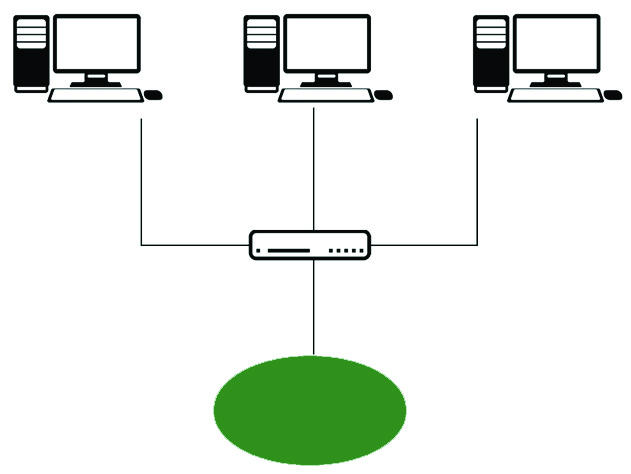
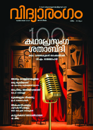
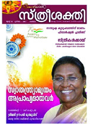
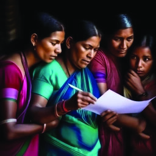
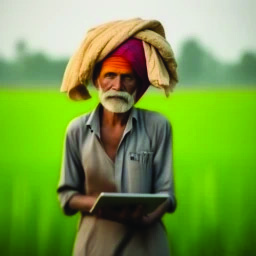
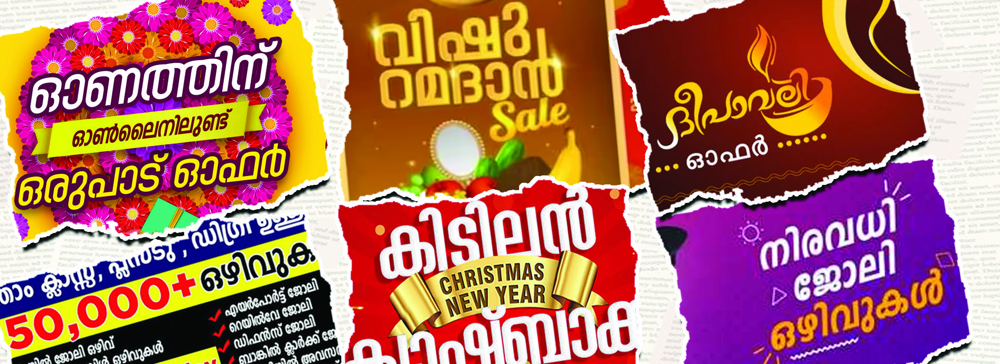
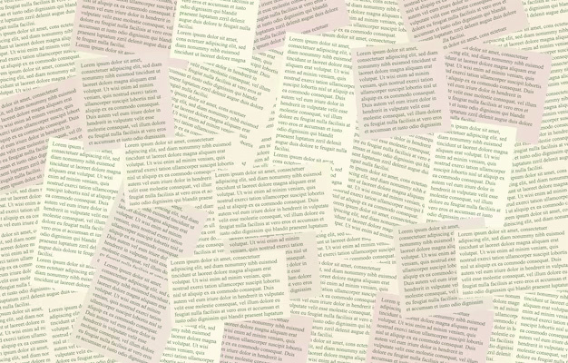
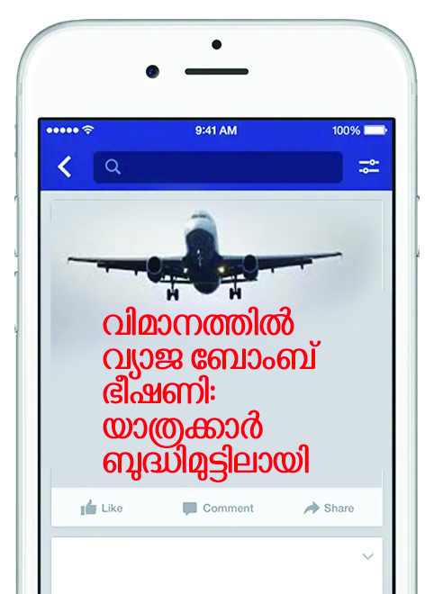

ചിിത്രംം നിിരീീക്ഷിിക്കൂൂ.
ആശയവിിനിിമയത്തിിനായി ഉപയോ�ോഗിിക്കുന്ന വിിവിിധ ഉപാധികളാാണ്് ചിിത്രത്തിിൽ നൽകിയി
രിക്കുന്നത്്. ആദിിമകാലംം മുതൽതന്നെ� ആശയവിിനിിമയത്തിിനായി വിിവിിധ രീീതികൾ മനുഷ്യയർ
ഉപയോ�ോഗിിച്ചുുവരുുന്നു. നിിരവധിി ആളുകളിലേ�ക്ക്് ഒരേ�സമയം ആശയവിിനിിമയം നടത്താൻ കഴിിയുന്ന
വിിവിിധ രൂപങ്ങളാാണ്് ബഹുുജനമാാധ്യമങ്ങൾ (Mass Media). പത്രങ്ങൾ, മാസികകൾ, റേഡിിയോ�ോ,
ടെെലിിവിിഷൻ, ഇന്റർനെ�റ്റ്്, സാമൂഹികമാധ്യമങ്ങൾ തുടങ്ങിയവ ഇതിൽപ്പെെƀടുന്നു.
ചിിത്രംം 7.1 l
മാാധ്യയമങ്ങളുംം സാാമൂഹിിക
പ്രതിിഫലനങ്ങളുംം
7
യൂൂണിിറ്റ്്
ഇൻ്റ്റർനെ�റ്റ്്
Page 103






Page 104



അച്ചടിി മാാധ്യയമങ്ങൾ
റേഡിിയോ�ോ
ടെെലിിവിിഷൻ
ഇൻ്റർനെ�റ്റ്്
l വാാർത്തകൾ
l ലേ�ഖനങ്ങൾ
l
l
l അറിയിപ്പുകൾ
l കാലാവസ്ഥാാ
മുന്നറിയിപ്പുകൾ
l
l
l വിിനോ�ോദ പരിപാടികൾ
l സിനിിമ
l
l
l ഓൺലൈൈൻ
വാാർത്തകൾ
l ഇ-കൊ�ൊമേ�ഴ്്സ്
l
l
വ്യക്തിികളിൽ വായനയ്ക്കുംം� എഴുത്തിിനുമുള്ള കഴിിവുകൾ വളർത്തിിയെ�ടുുക്കു
ന്നതിൽ മാധ്യമങ്ങൾ പ്രധാന പങ്കുുവഹി
ിക്കുന്നു. പത്രങ്ങൾ, മാസികകൾ,
ബ്ലോോƗോഗുുകൾ, സാമൂഹികമാധ്യമങ്ങൾ എന്നിവയിിലൂടെെ വ്യക്തിികൾ
ലിഖിതഭാാഷയു
ുമായി സമ്പർക്കം പുലർത്തുന്നു. ഇത്് വായനയെ�
പ്രോ�ോത്സാാഹിപ്പിക്കുന്നു. സാമൂഹികമാധ്യമങ്ങൾ, ബ്ലോോƗോഗുുകൾ, ഓൺലൈൈൻ
ഫോോോറങ്ങൾ എന്നിവപോ�ോലെ�യു
ുള്ള സംവേ�ദാാത്മക ഇടങ്ങൾ (Sensitive
Platforms) വ്യക്തിികളെ� അവരുുടെെ ചിിന്തകൾ പ്രതിഫലിിപ്പിക്കാനുംം�
പങ്കിടാനുംം� സഹായിക്കുന്നു. മാധ്യമങ്ങൾ, വായനശാാലകൾ, പുസ്തക
ക്ലബ്ബുുകൾ, ഓൺലൈൈൻ എഴുത്ത് കമ്മ്യൂൂ�ണിിറ്റികൾ തുടങ്ങിയവ വായനയുംം�
എഴുത്തുംം� സംസ്കാാരവുംം� വളർത്തുന്നു. വിിവിിധ സാക്ഷരതാ
ാപരിപാടികൾ
ജനങ്ങളിലേ�ക്കെ�
ത്തിിക്കാനുംം� ബോ�ോധവൽക്കരിിക്കാനുംം� സാധിക്കുന്നതിലൂടെെ
മാധ്യമങ്ങൾ സാമൂഹികപുരോ�ോഗതിിക്ക് ആക്കംകൂട്ടുുന്നു. അച്ചടിിമാധ്യമങ്ങളിൽ
നിിന്നുംം� ഡിിജിറ്റൽ മാധ്യമങ്ങളിലേ�ക്കുുള്ള വിികാസത്തിിന് സാങ്കേ�തിികവിിദ്യ
യുടെെ മുന്നേ�റ്റങ്ങൾ കാരണമാായി.
മാാധ്യയമങ്ങളുുടെെ വിിവിിധ രൂൂപങ്ങൾ
സാമൂഹികബന്ധങ്ങൾ രൂപപ്പെെƀടുത്തുന്നതിനുംം� വ്യക്തിികളും�ം സമൂഹവുുമാ
യുള്ള പാരസ്പര്യം�ം (Interaction) ഉറപ്പുവരുുത്തുന്നതിനുമുള്ള പ്രധാന
ആശയവിിനിിമയോ�ോപാധികളാാണ്് മാധ്യമങ്ങൾ. സാമൂഹികജീവിിതത്തിിൽ
വ്യക്തിികൾക്കുംം� സംഘങ്ങൾക്കുംം� സ്ഥാാപനങ്ങൾക്കുംം� ഇടപെ�ടാാൻ
കഴിിയുന്ന വിിനിിമയ ഇടങ്ങളാാണിവ. ഉപയോ�ോഗത്തിിന്റെ� അടിസ്ഥാാനത്തിിൽ
മാധ്യമങ്ങളെ� പലതാായി തരംംതിരിക്കാം.
1. അച്ചടിി മാാധ്യയമങ്ങൾ (Print Media)
സ്കൂൾ ലൈൈബ്രറിയിലുള്ള പ്രസിദ്ധീീകരണ
ങ്ങൾ നിിങ്ങൾ വായിക്കാറുണ്ടോോĬോ?
നിിങ്ങൾക്ക് ഏറ്റവുംം� ഇഷ്ടപ്പെെƀട്ട പ്രസിദ്ധീീകരണ
ങ്ങൾ ഏതൊ�ൊക്കെ�യാ
ാണ്്?
l
l
ചിിത്രംം 7.4 l പ്രിിന്റിംം�ഗ്് പ്രസ്്
ചിിത്രംം 7.3 l
ചിിത്രംം 7.2 l
ആശയവിിനിിമയോ�ോപാാധിി എന്ന നിിലയിൽ വിിവിിധ മാാധ്യമങ്ങളിിൽ ഉൾപ്പെƀടുുന്ന
കാാര്യയങ്ങൾ സൂചിിപ്പിക്കുുന്ന പട്ടിിക പൂർത്തിിയാാക്കൂ.
104
Page 105


ആനുുകാാലിിക പത്രമാാധ്യയമങ്ങളിിൽ വന്നിിട്ടുുള്ള ഏതെങ്കിിലുംംc വാർത്തകൾ,
ലേ�ഖനങ്ങൾ എന്നിിവയെെക്കുുറിിച്ചുുള്ള നിങ്ങളുടെെ വിലയിിരുുത്തലുംംc
അഭിിപ്രാായവുംംc സൂൂചിിപ്പിിച്ചുുകൊ�ൊണ്ട്് പത്രാധിപർക്ക് ഒരുു കത്ത് തയ്യാാറാക്കി
ക്ലാാസിൽ അവതരിിപ്പിിക്കൂ.
ചിിത്രംം 7.5 l
2. പ്രക്ഷേäപണ മാാധ്യയമങ്ങൾ (Broadcast Media)
പത്രങ്ങൾ, മാാസിികകൾ, പുസ്തകങ്ങൾ തുുടങ്ങിയ അച്ചടി മാാധ്യയമങ്ങളുുടെെ
പ്രസക്തിി ഡിിജിിറ്റൽ യുഗത്തിിലുംംc പ്രധാന്യയമുള്ളതാണ്്. ഇവ സമഗ്രമാായ
വാർത്തകളും�ം ഫീീച്ചറുുകളും�ം സാഹിിത്യസൃഷ്ടിികളും�ം സമൂൂഹത്തിിന്് നൽകുന്നുു.
വിശ്വവസനീീയമാായതുംംc ആഴത്തിിലുുള്ളതുുമാായ വായനാനുഭവംം അച്ചടി
മാാധ്യയമങ്ങളിലൂടെെ ലഭ്യയമാാകുന്നുു. ഇവ സൂക്ഷിിച്ചുവച്ച് പുനർവായനയ്ക്ക്്
ഉപകരിിക്കുുന്നുു. അച്ചടിമാാധ്യയമങ്ങളിൽ നിന്ന് വായനക്കാരിിലേ�ക്ക്് മാാത്രമേ�
ആശയവിനിമയംം സാധ്യയമാാകുന്നുുള്ളു.
പ്രക്ഷേ�പണ മാാധ്യയമങ്ങൾ പരിിപാടികൾ പ്രക്ഷേ�പണംം ചെെxയ്യുുന്നതിിനെ�
സൂചിപ്പിിക്കുുന്ന ചിത്രമാാണ്് മുകളിൽ നൽകിയിട്ടുുള്ളത്. റേ�ഡിിയോ�ോ,
ടെെലിിവിഷൻ എന്നിവപോ�ോലുുള്ള പ്രക്ഷേ�പണ മാാധ്യയമങ്ങൾ വലിയൊ�ൊരുു
വിഭാഗംം ജനങ്ങളിൽ ഒരേ�സമയംം
ആശയങ്ങൾ എത്തിിക്കുുന്നുു. ഇതിൽ
ആശയവിനിമയംം ഒരു ദിിശയിിൽ മാാത്രമേ� സാധ്യയമാാകുന്നുുള്ളു. പ്രക്ഷേ�പണ
പരിിപാടികളുുടെെ അഭിപ്രായംം രേ�ഖപ്പെ�ടുുത്താൻ കാലതാാമസംം നേ�രിിടുന്ന
തിനാൽ ഇവയിലുംംc പാരസ്പര്യസാധ്യയത പരിിമിതമാാണ്്.
വാർത്തകൾ, സംംഗീതംം, ചർച്ചകൾ, സംംവാദങ്ങൾ, കായികവിനോ�ോദംം
മുതലാായവ പ്രക്ഷേ�പണ മാാധ്യയമങ്ങളിലൂടെെ ലഭ്യയമാാകുന്നുു. ഡിിജിിറ്റൽ
പ്ലാാറ്റ്ഫോ�ോമുുകൾ വികസിിക്കുുന്നുുടെĬങ്കിിലുംംc പ്രക്ഷേ�പണമാാധ്യയമങ്ങൾ
പ്രക്ഷേ�പണ
നിലയംം
ഡേ�റ്റ അപ്ലോ�ോഡ്
്
ചെെxയ്യുുന്നുു
ഡേ�റ്റ ഡൗൺലോ�ോഡ്
്
ചെെxയ്യുുന്നുു
ട്രാാൻസ്മിറ്റർ/
റിസീവർ
ഉപഗ്രഹംം
ഡിി റ്റി എച്ച്
റിസീവർ
ടി വി കാണുന്നുു
105
മാാധ്യയമങ്ങളുംം സാാമൂഹിിക
പ്രതിിഫലനങ്ങളുംം
Page 106

വിിദ്യാ�ാഭ്യാ�ാസ സംബന്ധിിയാായ ബ്ലോോƗോഗുകൾ നിിങ്ങൾ നിിരീക്ഷിിക്കാാറു
ുണ്ടോ�ോ? അടുുത്തിിടെെ
നിിങ്ങൾ സന്ദർശിച്ച പ്രധാാന
പ്പെƀട്ട വിിദ്യാ�ാഭ്യാ�ാസ വെ�ബ്
്സൈൈറ്റ്് ഏതാാണ്്? അവയിിൽ
നിിങ്ങളെ� സ്വാ�ധീീനിിച്ച ഘടകങ്ങൾ എന്തൊŦൊക്കെ�യാായിിരുന്നു? ക്ലാാസിിൽ ചർച്ച ചെ�യ്യൂൂ.
ജനസം
ംഖ്യയുടെെ വലിിയൊ�ൊരുുവിിഭാാഗത്തെ�
സ്വാാ�ധീനിിക്കുകയുംം� പൊ�ൊതുുജനാഭി
പ്രായ രൂപീകരണ
ത്തിിന് സഹായകമാവുകയുംം� ചെ�യ്യുുന്നു.
റേഡിിയോ�ോ, ടെെലിിവിിഷൻ പരിപാടികളെ�ക്കുുറിച്ചുുള്ള നിിങ്ങളുടെെ അഭിപ്രായം
ഏതുവിിധമാണ്് സംപ്രേ�ക്ഷണംം ചെ�യ്യുുന്നവരെെ അറിയിക്കുന്നത്്?
l കത്തുകളിലൂടെെ
l
l
3. ഡിിജിിറ്റൽ മാാധ്യയമങ്ങൾ (Digital Media)
സംസ്ഥാാന വിിദ്യാ�ാഭ്യാ�ാസ ഗവേ�ഷണ
പരിശീലന സമിതി (SCERT) യുടെെ
യുംം� സമഗ്ര പോ�ോർട്ടലിിന്റെ�യുംം� ഹോം�ം പേ�ജിന്റെ� ചിിത്രങ്ങളാാണ്് മുകളിൽ
നൽകിയിട്ടുുള്ളത്്. നിിങ്ങൾ ‘സമഗ്ര’പോ�ോർട്ടൽ ഉപയോ�ോഗിിക്കാറില്ലേƽ.
എന്തൊ�ൊക്കെ�
പ്രത്യേ�േകതകളാാണ്് അതിനുള്ളത്്?
l
l
നിിങ്ങളുടെെ പഠനപ്രവർത്തനങ്ങൾക്ക് എന്തൊ�ൊക്കെ�
പിന്തുണയാാണ്് അത്്
നൽകുന്നത്്?
l
l
ഇന്റർനെ�റ്റിിന്റെ� വരവോ�ോടെെ
വിിപ്ലവകരമാായ പല മാറ്റങ്ങളുണ്ടാവുകയുംം�
ഡിിജിറ്റൽ പ്ലാാറ്റ്്ഫോോോമുകൾ നിിലവിിൽ വരിികയുംം� ചെ�യ്തുു. വെ�ബ്
്സൈൈറ്റുുകൾ,
ഓൺലൈൈൻ വാർത്തകൾ, ബ്ലോോƗോഗുുകൾ എന്നിവ തത്സമയ വിിവരങ്ങൾ
ജനങ്ങളിലെ�ത്തിിക്കാൻ തുടങ്ങി. ഇതോ�ോടെെ മാധ്യമങ്ങളിലൂടെെ സാമൂഹിക
പാരസ്പര്യം�ം (Social Interaction) വർധിച്ചുു. വിിവരങ്ങളുടെെ ഉള്ളടക്കം പങ്കിടാനുംം�
ചർച്ച ചെ�യ്യാാനുംം� ഇവ അവസരമൊ�ൊരു
ുക്കി.
ചിിത്രംം 7.6
106
Page 107
4. സാാമൂഹിികമാാധ്യയമങ്ങൾ (Social Media)
ഓൺലൈൈൻ സെ�മിിനാറിനെ�ക്കു
ുറിച്ച് സാമൂഹികമാധ്യമത്തിിലൂടെെ
ക്ലാസ്ടീച്ചർ വിിദ്യാ�ാർഥിികൾക്ക് അറിയിപ്പുനൽകുന്നതുംം� വിിദ്യാ�ാർഥിികൾ
അതിനോ�ോട്് പ്രതികരിക്കുന്നതുംം� ശ്രദ്ധിച്ചില്ലേƽ.
സാമൂഹികമാധ്യമങ്ങൾ നിിങ്ങളുടെെ പഠനാവശ്യങ്ങൾക്ക് ഏതെ�ല്ലാം�
തരത്തിിലുള്ള പിന്തുണ നൽകാറുണ്ട്?
l പഠനവിിഭവങ്ങൾ പങ്കുുവയ്ക്കൽ
l
l
സാമൂഹികമാധ്യമങ്ങൾ ആധുനിിക ജീവിിതത്തിിന്റെ� അവിിഭാാജ്യഘട
കമായി മാറിയിരിക്കുന്നു. വ്യക്ത്യാാ�ന്തര ബന്ധങ്ങളും�ം (Interper
sonal relationship) സാമൂഹിക പാരസ്പര്യവുംം� സാമൂഹികമാധ്യമ
ങ്ങളിൽ കൂടുതലാായി കാണപ്പെെƀടുന്നു. എഴുത്ത് (Text), ചിിത്രങ്ങൾ,
വീഡിിയോ�ോകൾ എന്നിവ പോ�ോലെ�യു
ുള്ള ഉള്ളടക്കം സൃഷ്ടിക്കാനുംം�
പങ്കിടാനുംം� സംവദിിക്കാനുംം� ഉപഭോ�ോക്താാക്കളെ�
അനുവദിിക്കുന്ന
ഓൺലൈൈൻ പ്ലാാറ്റ്്ഫോോോമുകളാാണ്് സാമൂഹികമാധ്യമങ്ങൾ. നേ�രിിട്ടുുള്ള
സന്ദേŭശമയയ്ക്കൽ, അഭിപ്രായം രേ�ഖപ്പെെƀടുത്തൽ, പൊ�ൊതുുവായ
ചിിത്രംം 7.7
5.00 pm
5.03 pm
5.05 pm
5.16 pm
107
മാാധ്യയമങ്ങളുംം സാാമൂഹിിക
പ്രതിിഫലനങ്ങളുംം
Page 108


മാാധ്യമങ്ങളുടെെ വിികാാസപരിിണാാമം സൂചിിപ്പിക്കുുന്ന ചുമർപത്രിക തയ്യാാറാാക്കിി
സാാമൂഹ്യയശാാസ്ത്ര ക്ലബ്ബിിൽ അവതരിിപ്പിക്കൂ.
അച്ചടിിമാധ്യമങ്ങളും�ം പ്രക്ഷേ�പണ മാധ്യമങ്ങളും�ം പരമ്പരാഗതമാാധ്യമങ്ങ
ളാാണ്്. ഏകദിിശയിൽ വിിനിിമയം സാധ്യമാക്കുന്നതിനാൽ ഇവയിിലൂടെെ
പാരസ്പര്യം�ം പരിമിതമാാണ്്. എന്നാൽ ഡിിജിറ്റൽ മാധ്യമങ്ങളും�ം സാമൂഹിക
മാധ്യമങ്ങളും�ം നവമാാധ്യമങ്ങളാാണ്്. ഇവ ഇരുദിിശയിലേ�ക്കുംം� സുഗമമായ
പാരസ്പര്യം�ം സാധ്യമാക്കുന്നു.
മാാധ്യമരൂപങ്ങളുടെെ (പത്രംം, മാാസിക, റേ�ഡിിയോ�ോ, ടെെലിിവിിഷൻ, വെ�ബ്
്സൈൈറ്റ്്,
സാാമൂഹികമാാധ്യമങ്ങൾ) പേ�രുുകൾ എഴുുതിയ സ്്ട്രിിപ്പുകൾ ഒരു പെ�ട്ടിിയിൽ
നിിക്ഷേ�പിിക്കുുക. വിിവിിധ സംഘങ്ങളാായി തിരിയുക. ഓരോ�ോ സംഘവുംം� വിിവിിധ
മാാധ്യമരൂപങ്ങൾ തിരഞ്ഞെെĚടുുക്കുുക. താാഴെെ നൽകിയിട്ടുള്ള സൂചനക
ൾ ഓരോ�ോ
മാാധ്യമങ്ങളിിൽ എങ്ങനെ�യെ�
ല്ലാാമാാണ്് അവതരിിപ്പിക്കുുന്നതെെന്ന് കണ്ടെ�ത്തു
ുക.
l പ്രാാദേ�ശിിക/ദേ�ശീീയ/അന്തർദേ�ശീീയ വാാർത്ത
l പരസ്യ
യങ്ങൾ
l വിിനോ�ോദം
l കാായികം
l വിിജ്ഞാാനംം
l കലകൾ
ഓരോ�ോ മാാധ്യമത്തിിലുംം� പ്രേ�ക്ഷകരുുടെെ പ്രതിികരണ
ങ്ങൾ പ്രകടി
ിപ്പിക്കുുന്ന
വിിധം കൂടി കണ്ടെ�
ത്തിി അതിന്റെ� അടിസ്ഥാാനത്തിിൽ അവതരിിപ്പിക്കൂ.
പങ്കിടൽ എന്നിവയുുൾപ്പെെƀടെെ വിിവിിധ ആശയവിിനിിമയ രൂപങ്ങളിലൂടെെ
സാമൂഹികബന്ധങ്ങളും�ം സാമൂഹികകൂട്ടായ്മകളും�ം സുഗമമാക്കുന്നു.
പൊ�ൊതുുജനാഭിപ്രായം രൂപപ്പെെƀടുത്തുന്നതിലുംം� സാമൂഹികപാരസ്പര്യങ്ങൾ
പ്രോ�ോത്സാാഹിപ്പിക്കുന്നതിലുംം� സാംസ്കാാരിക-രാഷ്ട്രീീയപ്രസ്ഥാാനങ്ങളെ�
സ്വാാ�ധീനിിക്കുന്നതിലുംം� സാമൂഹികമാധ്യമങ്ങൾ പ്രധാന പങ്കുുവഹി
ിക്കുന്നു.
പരമ്പരാഗതമാാധ്യയമങ്ങൾ
നവമാാധ്യയമങ്ങൾ
l ഡിിജിിറ്റൽ മാാധ്യയമങ്ങൾ
വെ�ബ്
്സൈൈറ്റ്്, ഓൺലൈൈൻ പത്രങ്ങൾ,
ബ്ലോോƗോഗുുകൾ തുടങ്ങിയവ
മാാധ്യയമങ്ങളുുടെെ വിിവിിധ രൂൂപങ്ങൾ
l അച്ചടിി മാാധ്യയമങ്ങൾ
പത്രംം, പുസ്തകങ്ങൾ തുടങ്ങിയവ
l പ്രക്ഷേേäപണ മാാധ്യയമങ്ങൾ
റേഡിിയോ�ോ, ടെെലിിവിിഷൻ
തുുടങ്ങിയവ
l സാാമൂഹിികമാാധ്യയമങ്ങൾ
ഫോോോട്ടോ�ോ-വീഡിിയോ�ോ പങ്കുുവയ്ക്കൽ
പ്ലാാറ്റ്്ഫോോോമുകൾ, ഓൺലൈൈൻ ചർച്ചാ
ഫോോോറങ്ങൾ തുടങ്ങിയവ
108
Page 109
പ്രവർത്തനത്തിിലെ� കണ്ടെെĬത്തലുുകളുടെെ അടിസ്ഥാാനത്തിിൽ പരമ്പരാഗത
മാധ്യമങ്ങളും�ം നവമാാധ്യമങ്ങളും�ം എങ്ങനെ� വ്യത്യാാ�സപ്പെെƀട്ടിരിക്കുന്നു
വെ�ന്ന്് പരിശോ�ോധിക്കാം.
കൂടുതൽ വ്യത്യാാ�സങ്ങൾ കണ്ടെെĬത്തിി കൂട്ടിച്ചേ�ർക്കൂൂ.
പ്രത്യേ�േകതകൾ
പരമ്പരാഗത മാാധ്യയമങ്ങൾ
നവമാാധ്യയമങ്ങൾ
ആശയവിിനിമയംം
ഏകദിിശയിൽ ആശയവിിനിിമയം
(വിിനിിമയം ചെ�യ്യുുന്നവരിിൽ നിിന്നുംം�
സ്വീീ�കർത്താക്കളിിലേ�ക്ക്് മാത്രംം)
ഇരുദിിശയിൽ ആശയവിിനിിമയം
(വിിനിിമയം ചെ�യ്യുുന്നവരും�ം
സ്വീീ�കർത്താക്കളും�
ം തമ്മിൽ)
പാരസ്പര്യം�ം
പാരസ്പര്യം�ം പരിമിതമാാണ്്
ഉയർന്ന പാരസ്പര്യതയുംം�
പങ്കെ�ടുുക്കലുംം�
രൂൂപം
ഭൗ�തികരൂപം
(പത്രംം, റേഡിിയോ�ോ, ടെെലിിവിിഷൻ)
ഡിിജിറ്റൽ രൂപം
(ഇൻ്റ്റർനെ�റ്റ്് സൗകര്യമുള്ള
ഉപകരണ
ങ്ങൾ)
സ്വീകർത്താാക്കൾ
പരിമിതമാായ പങ്കാളിത്തം
ക്രിിയാത്മക പങ്കാളിത്തം
ലഭ്യയത
സ്ഥലകാ
ാല പരിമിതിയുള്ളതിനാൽ
എപ്പോോƀോഴും�ം ലഭ്യമാകുന്നില്ല.
സ്ഥലകാ
ാല പരിമിതിയില്ലാതെ�
അന്തർദ്ദേŔശീയമായുംം�
ലഭ്യമാകുന്നു.
l
l
l
l
l
l
പൊ�ൊതുുജനാഭിപ്രായം (Public Opinion), സാമൂഹികവഴക്ക
ങ്ങൾ (Social Norms),
സാംസ്കാാരിക മൂല്യങ്ങൾ എന്നിവയെ� സ്വാാ�ധീനിിച്ചുുകൊ�ൊണ്ട് സമൂഹത്തെ�
രൂപപ്പെെƀടുത്തുന്നതിൽ മാധ്യമങ്ങൾ പ്രധാനപങ്കുുവഹി
ിക്കുന്നു. പത്രങ്ങൾ,
റേഡിിയോ�ോ, ടെെലിിവിിഷൻ എന്നീ പരമ്പരാഗത മാധ്യമങ്ങൾ വിിനോ�ോദംം,
വിിവരവിിനിിമയം, വിിജ്ഞാാനം എന്നിവ സാധ്യമാക്കുന്നു. അതേ�സമയം
നവമാാധ്യമങ്ങൾ കൂടുതൽ ആശയവിിനിിമയം സാധ്യമാക്കുകയുംം� പങ്കാ
ളിത്തം വർധിപ്പിക്കുകയുംം� ചെ�യ്യുുന്നു.
സാമൂഹികമാധ്യമങ്ങളുടെെ ഇടപെ�ടൽ വ്യക്തിികൾ തമ്മിലുള്ള ബന്ധത്തെ�
ഗുണാത്മകമായി സ്വാാ�ധീനിിക്കുന്നുണ്ട്. എന്നാൽ ഗുണാത്മകമല്ലാത്ത
സാഹചര്യയങ്ങളും�ം ഇവ സമൂഹത്തിിൽ സൃഷ്ടിക്കുന്നതായി സമൂഹശാാസ്ത്ര
ജ്ഞർ വിിലയിിരുത്തുന്നുണ്ട്. ഹ്രസ്വമായ പാരസ്പര്യത്തിിൽ ഏർപ്പെെƀടാൻ
സാമൂഹികമാധ്യമങ്ങളിലൂടെെ സാധിക്കുമെെങ്കിിലുംം� അർഥപൂൂർണ്ണവുംം�
ആഴത്തിിലുമുള്ള ബന്ധങ്ങളിൽ ഏർപ്പെെƀടുന്നതിൽ അവ പരാജയപ്പെെƀടു
ന്നുണ്ട്.
109
മാാധ്യയമങ്ങളുംം സാാമൂഹിിക
പ്രതിിഫലനങ്ങളുംം
Page 110

പരമ്പരാാഗത
മാാധ്യമങ്ങളുടെെയുംം� നവമാാധ്യമങ്ങളുടെെയുംം� പ്രത്യേേകതകൾ
സൂചിിപ്പിക്കുുന്ന കൊ�ൊളാാഷ്
് തയ്യാാറാാക്കിി ക്ലാാസിിൽ അവതരിിപ്പിക്കൂ.
പരമ്പരാഗതമാാധ്യമങ്ങളും�ം നവമാാധ്യമങ്ങളും�ം ആധുനിിക സമൂഹത്തിിന്റെ�
അവിിഭാാജ്യഘടകമായി മാറിയിരിക്കുന്നു. വിിവിിധ മാധ്യമരൂപങ്ങൾ നമ്മുടെെ
സാമൂഹിക ജീവിിതത്തെ�
എങ്ങനെ� സ്വാാ�ധീനിിക്കുന്നുവെ�ന്ന്് പരിശോ�ോധിക്കാം.
1. മാാധ്യയമങ്ങളുംം സാാമൂഹീീകരണവുംം� (Media & Socialisation)
നിിങ്ങൾക്കിഷ്ടമുള്ള ബാലപ്രസിദ്ധീീകരണം
ം ഏതാണ്്?
എന്തൊ�ൊക്കെ�യാ
ാണ്് അതിലൂടെെ നിിങ്ങൾക്ക് ലഭിിച്ചിട്ടുുള്ള അറിവുകൾ?
l കഥകൾ
l മൂല്യങ്ങൾ
l ഗുുണപാാഠങ്ങൾ
l
l
l
കഥകളിലൂടെെയുംം� കവിിതകളിലൂടെെയുുമെെല്ലാം� സാമൂഹിക വഴക്ക
ങ്ങളും�ം
ഗുണപാാഠങ്ങളും�ം, വിിജ്ഞാാനവുംം� വിിനോ�ോദവുംം� ലഭിിക്കുന്നില്ലേƽ. സമൂഹത്തിിൽ
എങ്ങനെ� ജീവിിക്കണമെെന്നുംം�
പെ�രുുമാറണമെെന്നുംം� ചെ�റുുപ്പം മുതൽ തന്നെ�
നമ്മുടെെ ചുറ്റുപാടിൽ നിിന്നുംം� നാം പഠിച്ചെ�ടുുക്കുന്ന പ്രക്രിിയയാണ്്
സാമൂഹീകരണം
ം (Socialisation). ഉദാഹരണ
ത്തിിന്, മുതിർന്നവരെെ
ബഹുുമാനിിക്കണമെെ
ന്ന മൂല്യം�ം നാം കുട്ടികളാായിരിക്കുമ്പോ�ോൾ തന്നെ�
രക്ഷിിതാക്കളിിൽ നിിന്ന് പഠിച്ചെ�ടുുക്കുന്നതാണ്്.
കുടും�ംബം, വിിദ്യാ�ാലയംം, കൂട്ടുുകാർ, മാധ്യമങ്ങൾ തുടങ്ങിയവയെ�ല്ലാം�
സാമൂഹീകരണ
പ്രക്രിിയയെ� സഹായിക്കുന്നു. നാം സമൂഹത്തിിൽ എങ്ങനെ�
ഇടപെ�ടണമെെന്നുംം� എന്ത് ആഗ്രഹിക്കണമെെന്ന്
് തീരുമാനിിക്കുന്നതിലുംം�
വ്യക്തിിത്വരൂപീകരണ
ത്തിിലുംം� മാധ്യമങ്ങൾ സ്വാാ�ധീനിിക്കാറുണ്ട്. ഒരു
തലമുുറയിൽ നിിന്നുംം� അടുത്ത തലമുുറയിലേ�ക്ക്് കൈൈമാറ്റം ചെ�യ്യപ്പെെƀടുന്ന
സാാമൂഹിിക ജീീവിിതത്തിൽ മാാധ്യയമങ്ങളുുടെെ സ്വാാ�ധീീനം
സാമൂഹികമാധ്യമങ്ങളുടെെ അമിത ഉപയോ�ോഗംം സൃഷ്ടിക്കുന്ന കൂടുതൽ
പ്രശ്നങ്ങൾ കണ്ടെെĬത്തിി കൂട്ടിച്ചേ�ർക്കൂൂ.
l വിിദ്യാ�ാർഥിികളുടെെ പഠനത്തെ�യുംം�
ശാരീീരിക-മാനസി
ികാരോ�ോഗ്യയ
ത്തെ�യുംം� പ്രതികൂലമാായി ബാധിക്കുന്നു.
l അനിിയന്ത്രിിതമാായ ഉപയോ�ോഗംം വ്യക്തിിബന്ധങ്ങളിലുംം� സാമൂഹിക
ബന്ധങ്ങളിലുംം� അകലംം സൃഷ്ടിക്കുന്നു.
l
l
ചിിത്രംം 7.8
110
Page 111


കൈൈറ്റ്് വിിക്ടേÜഴ്സ്് വിിദ്യാ�ാഭ്യാ�ാസ ചാാനലിിലെ� പരിിപാാടിികൾ നിിങ്ങളുടെെ
സ്വവഭാാവരൂൂപീകരണ
ത്തിിലുംം� സാാമൂഹിക അറിിവ് നിിർമ്മാാണത്തിിലുംം� എങ്ങനെ�
പിന്തുണ നൽകുന്നുവെ�ന്ന്് കണ്ടെ�
ത്തിി നിിരീക്ഷണ
ക്കുുറിിപ്പാായി ക്ലാാസിിൽ
അവതരിിപ്പിക്കൂ.
സാമൂഹിക മൂല്യങ്ങൾ, വഴക്ക
ങ്ങൾ മുതലാായവ മാധ്യമങ്ങളിലൂടെെയുംം�
വിിനിിമയം ചെ�യ്യപ്പെെƀടുന്നു.
2. മാാധ്യയമങ്ങളുംം പൊ�ൊതുുജനാാഭിപ്രായ രൂൂപീീകരണവുംം�
(Media & Public opinion Formation)
പത്രവാാർത്ത വായിച്ചില്ലേƽ. ജനാധിപത്യക്രമത്തിിൽ സർക്കാർ പുതിയ
നയങ്ങൾ രൂപീകരിക്കുന്നതിനുമുമ്പായി പൊ�ൊതുുജനങ്ങളുടെെ അഭിപ്രായം
പരിഗണി
ിക്കാറുണ്ട്. വിിവിിധ മാധ്യമങ്ങളിലൂടെെ പൊ�ൊതുുജനങ്ങളോ�ോട്് നിിർദേ�
ശങ്ങൾ സമർപ്പിക്കാൻ ആവശ്യപ്പെെƀടാറുണ്ട്.
തിരഞ്ഞെെĚടുപ്പ് സമയങ്ങളിലുംം� അന്തർദേ�ശീീയ നയരൂപീകരണ
ത്തിിലുംം�
മാധ്യമങ്ങളിലൂടെെ പൊ�ൊതുുജനാഭിപ്രായം രൂപീകരിക്കാറുണ്ട്. ഇത്തരത്തിിൽ
ജനങ്ങളുടെെ അഭിപ്രായരൂപീകരണ
ത്തിിലുംം� ജനസമ്മതിി നേ�ടുുന്നതിലുംം�
മാധ്യമങ്ങൾ പ്രധാന ഉപാധിയായി പ്രവർത്തിിക്കുന്നു.
ചിില മാധ്യമങ്ങളിൽ വരുുന്ന പരിപാടികൾ പക്ഷപാാതപരവുംം�
പ്രതിലോ�ോമകരവുുമാകാറുണ്ട്. കൃത്യതയുംം� വ്യക്തതയു
ുമില്ലാത്ത
ആശയങ്ങൾ നവമാാധ്യമങ്ങളിലൂടെെ പ്രചരിിപ്പിക്കുന്നത്് ശ്രദ്ധിച്ചിട്ടില്ലേƽ.
സാമൂഹികമാധ്യമങ്ങളുടെെ വളർച്ച ഈ പ്രവണത
കൾക്ക് ആക്കം
കൂട്ടാറുണ്ട്. കോ�ോവിിഡ്-19 വ്യാാ�പനസമയത്ത് അതുമായി ബന്ധപ്പെെƀട്ട്
വ്യാാ�ജചിികിിത്സാാരീീതികൾ, വൈൈറസ്് സംബന്ധിയായ കെ�ട്ടുുകഥകൾ
തുടങ്ങിയവ ചിില സാമൂഹികമാധ്യമങ്ങൾ പ്രചരിിപ്പിച്ചിരുന്നത്് ഇതിന്
കേ�രള നിയമ പരിഷ് കരണ
കമ്മിിഷൻ നിർദേേശങ്ങളുംം
അഭിപ്രായങ്ങളുംം ക്ഷണിിച്ചുു
കേ�രള
പബ്ലിക്
സർവീസ്
കമ്മിഷൻ
ഉദ്യോ�ാ�ഗാർഥിികളുടെെ റാങ്ക് ലിസ്റ്റ്് തയ്യാറാക്കുന്നത്്
സമഗ്രമായി പഠിച്ച് റിപ്പോോƀോർട്ട് സമർപ്പിക്കുന്നത്്
കേ�രള നിിയമ പരിഷ്് കരണ
കമ്മിഷനെ�
സർക്കാർ
ചുമതലപ്പെെƀടുത്തിിയിരിക്കുന്ന
സാഹചര്യയത്തിിൽ
ഈ
വിിഷയവുമായി
ബന്ധപ്പെെƀട്ട്, പൊ�ൊതുുജനങ്ങളിൽ നിിന്നുംം�
നിിർദേ�ശങ്ങളും�ം അഭിപ്രായങ്ങളും�ം ശേ�ഖരിക്കുന്നു.
2022 സെ�പ്്റ്റംബർ ഒന്നിന് രാവിിലെ� 10.30ന്
തിരുവനന്തപുരം തൈൈക്കാാട് ഗവൺമെെന്റ്് ഗസ്റ്റ്്
ഹൗസ് കോ�ോൺഫറൻസ് ഹാളിൽ വച്ചാണ്് പബ്ലിക്
ഹിയറിം�ംഗ്. ഈ വിിഷയവുമായി ബന്ധപ്പെെƀട്ട്
എല്ലാവർക്കുംം� അന്നേ� ദിിവസം
ം ഹിയറിം�ംഗിിൽ
പങ്കെ�ടുുത്ത് നിിർദേ�ശങ്ങളും�ം അഭിപ്രായങ്ങളും�ം
നേ�രിിട്ടും�ം തപാാൽ മുഖേ�ന സെ�ക്രട്ടറിി, കേ�രള
നിിയമ പരിഷ്് കരണ
കമ്മിഷൻ, റ്റി.സി. നമ്പർ
25/2450, മൂന്നാം നിില, സി.എസ്.ഐ ബിൽഡിംം�ഗ്,
പുത്തൻചന്ത, തിരുവനന്തപുരം 695 001 എന്ന
ഓഫീസ് മേ�ൽവിിലാസത്തിിലുംം� സമർപ്പിക്കാം.
ചിിത്രംം 7.9 l
അഭിിപ്രാായരൂപീകരണം
ം
111
മാാധ്യയമങ്ങളുംം സാാമൂഹിിക
പ്രതിിഫലനങ്ങളുംം
Page 112



3. മാാധ്യയമവുംം� ഉപഭോ�ോഗ സ്വവഭാവവുംം�
(Media and Consumption Behaviour)
ചിിത്രംം 7.10
ചിിത്രത്തിിലെ� പരസ്യങ്ങൾ പൊ�ൊതുുജനങ്ങളെ� ആകർഷിച്ചേ�ക്കാാവുന്നതിന്റെ�
കാരണ
ങ്ങൾ എന്തൊ�ൊക്കെ�യാ
ാവാം
?
l
l
നിിങ്ങളുടെെ ഭക്ഷണശീ
ീലത്തെ�
മാധ്യമങ്ങൾ സ്വാാ�ധീനിിക്കാറുണ്ടോോĬോ?
സാമൂഹികമോ�ോ രാഷ്ട്രീീയമോ�ോ പാരിസ്ഥിതികമോ�ോ ആയ പ്രശ്ന
ങ്ങൾ പൊ�ൊതുുജനങ്ങൾക്കിടയിലെ�ത്തിിക്കാൻ സാമൂഹികമാധ്യ
മങ്ങൾ, വെ�ബ്
്സൈൈറ്റുുകൾ, ഓൺലൈൈൻ ക്യാാ�മ്പയിനുകൾ
തുടങ്ങിയവപോ�ോലുുള്ള ഡിിജിറ്റൽ ഉപാധികളും�ം ഉപയോ�ോഗിി
ക്കുന്നുണ്ട്. ഇത്തരത്തിിലുള്ള പ്രവർത്തനങ്ങൾ സാമൂഹിക
മാധ്യമങ്ങളിൽ വർധിച്ചുുവരുുന്നത്് ശ്രദ്ധിച്ചിട്ടുുണ്ടോോĬോ? നിിങ്ങളതിിൽ
പങ്കാളികളാാകാറുണ്ടോോĬോ?
സാമൂഹികമാധ്യമങ്ങളുടെെ പ്ലാാറ്റ്്ഫോോോമുകൾ ആശയവിിനിിമയ
ത്തിിനുംം�, സത്വര വിിഭവസമാഹരണ
ത്തിിനുമുള്ള വഴിികൾ സാധ്യ
മാക്കുന്നതിലൂടെെ പൊ�ൊതുുജന ഇടപെ�ടലുകൾക്ക് ആക്കം
കൂട്ടുുന്നു. സാമൂഹികമാധ്യമങ്ങളിലെ� വിിവിിധ ഹാഷ്്ടാാഗ്
(#) ക്യാം�ംപയിനുകൾ, ബോ�ോധവൽക്കരണ
പരിപാടികൾ,
ധനശേ�ഖരണം
ം എന്നിവ ചിില ഉദാഹരണ
ങ്ങളാാണ്്.
മാാധ്യമങ്ങളിിലെ� തെെറ്റാായ ധാാരണകളും�
ം വിിവരങ്ങളും�ം
തിരിച്ചറിിയുന്നതിന് എന്തൊŦൊക്കെ� ചെ�യ്യാാൻ കഴിിയു
മെെന്ന്് ക്ലാാസിിൽ ചർച്ച ചെ�യ്ത്് ചാാർട്ടിിൽ രേ�ഖപ്പെƀടുുത്തൂ.
ഉദാഹരണമാ
ാണ്്. ഇത്് തെ�റ്റാായ പൊ�ൊതുുജനാഭിപ്രായരൂപീകണത്തിിന്
കാരണമാാകുന്നു. ഇത്തരംം തെ�റ്റാായ വാർത്തകൾ സൃഷ്ടിക്കുകയുംം�
പ്രചരിിപ്പിക്കുകയുംം� ചെ�യ്യുുന്നത്് വിിവരസാ
ാങ്കേ�തിികവിിദ്യാ�ാ നിിയമം
(IT Act 2000) പ്രകാരം ശിക്ഷാർഹമാാണ്്.
വിിവരവിിനിിമയ
സാാങ്കേ�തിികവിിദ്യയകൾ
ഉപയോ�ോഗിച്ചോ�ോ അവയെ�
ലക്ഷ്യംം�വച്ചോ�ോ നടത്തുന്ന
കുറ്റകൃത്യങ്ങളാാണ്് സൈൈബർ
കുറ്റകൃത്യങ്ങൾ. കമ്പ്യൂൂ�ട്ടർ,
മൊ�ൊബൈൈ
ൽ ഫോോോൺ,
ഡിിജിിറ്റൽ ക്യാാ�മറകൾ
തുടങ്ങിയവയാാണ്് ഇതിലെ�
ഉപകരണ
ങ്ങൾ. സൈൈബർ
കുറ്റകൃത്യങ്ങളിിലേ�ർപ്പെƀ
ടുുന്നവർക്ക് കർശനമാായ
നിിയമനടപടി
ികളും�ം
ശിക്ഷയുംം� ഉറപ്പാാക്കുുന്നതിന്
പാാർലമെെന്റ്് പാാസ്സാാക്കിിയ
നിിയമമാാണ്് വിിവരസാാങ്കേ�
തികവിിദ്യാ�ാ നിിയമം 2000.
വിിവരസാാങ്കേÿതിിക
വിിദ്യാDzാ നിിയമംം 2000
(IT Act 2000)
112
Page 113

ഭക്ഷ്യവസ്തുക്കളുുടെെ പരസ്യങ്ങളുടെെയുംം� പാചകപരിപാടികളുടെെയുംം�
കലവറയാ
ാണ്് മാധ്യമങ്ങൾ. ഇത്തരത്തിിൽ ധാരാളം മേ�ഖലകളുമായി
ബന്ധപ്പെെƀട്ട പരസ്യങ്ങൾ മാധ്യമങ്ങളിൽ കാണാം. ഇവയി
ിൽ
പരസ്യങ്ങൾ നൽകുന്നതിലൂടെെയുംം� തൊ�ൊ
ഴിിലവസരങ്ങൾ അറിയിക്കുന്ന
തിലൂടെെയുംം�, ഉപഭോ�ോക്തൃത്വംം� വർധിപ്പിക്കുന്നതിലൂടെെയുംം� ആഗോ�ോള
സമ്പദ്വ്യയവസ്ഥയു
ുടെെ വളർച്ചയ്ക്ക് മാധ്യമങ്ങൾ ആക്കം കൂട്ടുുന്നു.
മാധ്യമങ്ങളിലൂടെെയുുള്ള പരസ്യങ്ങളും�ം മറ്റ്് പരിപാടികളും�ം നമ്മുടെെ
ഉപഭോ�ോഗസ്വവഭാാവത്തെ�
രൂപീകരിക്കുന്നതിൽ സ്വാാ�ധീനം ചെ�ലുുത്തുന്നുണ്ട്.
4. മാാധ്യയമങ്ങളുംം വാർപ്പുുമാാതൃകകളുംം (Media and Stereotypes)
എന്തൊ�ൊക്കെ�
മുൻധാരണ
കളാാണ്് ഇവിിടെെ പ്രതിപാദിിച്ചിട്ടുുള്ളത്്.
l
l
l
l
l
ഇവ വസ്തുതാപരമാായി ശരിയാണോ�ോ?
സാമാന്യവൽക്കരിിച്ച മുൻധാരണ
കളോ�ോടുുകൂടിയ പ്രസ്താവനകളാാണ്്
വാർപ്പുമാതൃകകൾ (Stereotypes). വർഗം, ലിംം�ഗപദവിി, സംസ്കാാരം, നിിറം
മുതലാായവയുുടെെ അടിസ്ഥാാനത്തിിൽ വ്യക്തിികളെ�ക്കുുറിച്ചുുള്ള ലളിിതവുംം�
സാമാന്യവൽക്കരിിച്ചതുുമായ വിിശ്വാാ�സങ്ങളോ�ോ ആശയങ്ങളോ�ോ ആണ്്
വാർപ്പുമാതൃകകൾ.
ഇത്തരംം വാർപ്പുമാതൃകകൾ മാധ്യമങ്ങളിൽ വിിവിിധ രൂപത്തിിൽ പ്രതിഫലിി
ക്കുന്നതായി നിിങ്ങൾ ശ്രദ്ധിച്ചിട്ടുുണ്ടോോĬോ?
സമൂഹത്തിിൽ ചിിലയിിടങ്ങളിൽ ഇപ്പോോƀോഴും�ം നിിലനിിൽക്കുന്ന മനോ�ോഭാാവങ്ങ
ളേ�യുംം� വിിശ്വാാ�സങ്ങളേ�യുംം� സംബന്ധിച്ച മുൻധാരണ
കൾ ശ്രദ്ധിക്കൂൂ.
പുുരുുഷന്മാാർ കുുടുംംബത്തിന്റെ�
അന്നദാതാക്കളുംം സംരക്ഷകരുുമാാണ്
കുുറഞ്ഞ വരുുമാാനമുുള്ളവർ
വിിദ്യാ�ാഭ്യാ�ാസമിില്ലാാത്തവരാ
ാണ്
തൊ�ൊഴിിലെ�ടുുക്കുുന്ന സ്ത്രീീകൾ പരിഷ്ക്കാരികളാണ്,
അവർ കുുടുംംബ ഉത്തരവാ
ാദിത്വവങ്ങൾ അവഗണിിക്കുുന്നുു
സൗന്ദര്യം�ം വർധിപ്പിക്കുുന്നതിിന്
ഫെ�യർനെ�സ്് ക്രീീമുുകൾ ഉപയോ�ോഗിിക്കണം
സ്ത്രീീകളുുടെെ സ്ഥാാനം
അടുുക്കളയിിലാണ്,
അവർ കുുടുംംബത്തെ�
പരിപാലിക്കേ�ണ്ടവരാാണ്
പത്രങ്ങളിിലുംം� മാാസികകളിിലുംം� വന്നിട്ടുള്ള ഭക്ഷണസം
ംബന്ധിിയാായ പരസ്യ
യങ്ങളുടെെ ചിിത്ര
ങ്ങൾ ശേ�ഖരിക്കുുക. അവ നിിങ്ങളുടെെ ആരോ�ോഗ്യകരമാാ
യ ഭക്ഷണശീ
ീലത്തിിൽ എന്തൊŦൊക്കെ�
മാാറ്റങ്ങൾ കൊ�ൊണ്ടുുവന്നുവെ�ന്ന്് ചർച്ച ചെ�യ്ത്് വാാർത്താാ കൊ�ൊളാാഷ്
് തയ്യാാറാാക്കൂൂ.
113
മാാധ്യയമങ്ങളുംം സാാമൂഹിിക
പ്രതിിഫലനങ്ങളുംം
Page 114



വിിവിിധ മാാധ്യമപരിിപാാടിികൾ നിിരീക്ഷിിച്ച് വാാർപ്പുമാാതൃകകൾ രൂപീകരിിക്കുുന്നതിലുംം�
നിിലനിിർത്തുന്നതിലുംം� മാാധ്യമങ്ങളുടെെ പങ്ക് വ്യക്തമാാക്കുുന്ന ഡിിജിിറ്റൽ ആൽബം/
ഡിിജിിറ്റൽ കൊ�ൊളാാഷ്
് തയ്യാാറാാക്കിി ക്ലാാസിിൽ അവതരിിപ്പിക്കൂ.
5. മാാധ്യയമവുംം� സാാമൂഹിിക ഇടപെ�ടലുു
കളുംം
(Media and Social Interventions)
വാർത്താതലക്കെ�
ട്ടുുകളും�ം ഹാഷ്്ടാാഗ് വാചകങ്ങളും�ം നിിരീീക്ഷിിക്കൂൂ.
എന്തൊ�ൊക്കെ�
സാമൂഹികപ്രശ്നങ്ങളാാണ്് ഇതിൽ പ്രതിഫലിിക്കുന്നത്്?
l
l
l
l
l
l
നമ്മുുടെെ ഗ്രാാമത്തെ� സംരക്ഷിക്കുുക
സാാമൂഹിികനീീതിിക്കായി
സുുസ്ഥിരഭാാവിി
വിിവേ�ചനത്തിനെ�തിിരെെ
മഴ തുുടരുുന്നുു:
ജലനിരപ്പ് ഉയരുുന്നതിിനാൽ
കേ�രളംംം ജാഗ്രതയി
ിൽ
സാാമ്പത്തിക മാാന്ദ്യങ്ങൾക്കുംം�
പ്രതിിസന്ധിികൾക്കുുമിിടയിിൽ
ആഗോ�ോള ദാരിദ്ര്യയനിരക്ക് ഉയരുുന്നുു
മലിിനീീകരണവുംം�
കാലാവസ്ഥാാ വ്യതിിയാനവുംം�
ചെ�റുുക്കാനുുള്ള അടിിയന്തിിര
നടപടിിക്ക് യുു.എൻ.ഒ.
ചൂരൽമല, മുുണ്ടക്കൈൈ
ഉരുുൾപ്പൊ�ൊട്ടലിൽ അതിിജീീവിിതർക്ക്
കേ�രള സർക്കാർ
പുുനരധിിവാസവുംം� സാാമ്പത്തിക
സഹാ
ായവുംം� പ്രഖ്യാാ�പിച്ചുു
ഇവ ഏതെ�ല്ലാം� മാധ്യമപരിപാടികളിൽ പ്രതിഫലിിക്കുന്നുണ്ട്?
l പരമ്പരകൾ
l പരസ്യങ്ങൾ
l സിനിിമ
l
l
l
വിിവിിധരൂപത്തിിലുള്ള മാധ്യമങ്ങളാായ ചലച്ചിത്രംം, വാർത്തകൾ, സാമൂഹി
കമാധ്യമങ്ങൾ എന്നിവ സാമൂഹികമനോ�ോഭാാവങ്ങളെ� രൂപീകരിക്കുകയുംം�
പ്രതിഫലിിപ്പിക്കുകയുംം� ചെ�യ്യുുന്നു. മാധ്യമങ്ങൾ പൊ�ൊതുുജനങ്ങളുടെെ
കാഴ്ചപ്പാടിനെ� സ്വാാ�ധീനിിക്കുകയുംം� സാമൂഹികവഴക്ക
ങ്ങൾ ബലപ്പെെƀടുത്തു
കയുംം� ചെ�യ്യുുന്നു. ഇതിലൂടെെ വാർപ്പുമാതൃകകളെ� രൂപീകരിക്കുന്നതിലുംം�
നിിലനിിർത്തുന്നതിലുംം� ഇവ പ്രധാന പങ്കുുവഹി
ിക്കുന്നു.
114
Page 115


നിിങ്ങളുടെെ പ്രദേ�
ശത്തെ� ഒരു സാാമൂഹികപ്രശ്നത്തെ�ക്കുുറിിച്ച് വാാർത്ത തയ്യാാറാാക്കിി
ക്ലാാസിിൽ അവതരിിപ്പിക്കുുക. ആ വിിഷയത്തെ� പരിിഹരിിക്കുുന്നതിനുള്ള വിിവിിധ
മാാർഗങ്ങളെ�ക്കുുറിിച്ച് ക്ലാാസിിൽ ചർച്ച ചെ�യ്യൂൂ.
മാാധ്യയമങ്ങളുംം സാാങ്കേേÿതിികവിിദ്യയുംം� (Media & Technology)
പരസ്യമാാതൃക പൊ�ൊളിിച്ചെ�ഴുുതിി സർക്കാർ
കൊ�ൊച്ചിി : കൊ�ൊച്ചിിയിൽ നടന്ന അന്താരാഷ്ട്ര ജെ�ൻ എ.ഐ.
ഉച്ചകോ�ോടി
ിക്കുവേ�ണ്ടി സ്ഥാാപിച്ച പരസ്യങ്ങളാാണിത്്.
നിിർമ്മിതബു
ുദ്ധിയുടെെ (എ.ഐ.) സഹായത്തോ�ോടെെ
സൃഷ്ടിച്ചതാാണ്് ഇതിലെ� പരസ്യമോ�ോഡലുുകൾ. നാല്
എ.ഐ. മോ�ോഡലുുകളിൽ ഉഷചേ�ച്ചിി തയ്യൽക്കാരി,
ജോ�ോസേ�ട്ടൻ സർക്കാർ സേ�വനങ്ങൾ ആവശ്യമുള്ള
ഒരു സാധാരണക്കാരൻ, രാമൻകുട്ടി കർഷകൻ,
മിനിിമോ�ോൾ സംരംഭക. കർഷകരെെയുംം� സംരംഭക
രെെയുുമെെല്ലാം� ഒരുപോ�ോലെ� കോ�ോർത്തിിണക്കുന്ന ഈ
പരസ്യത്തിിലെ� മോ�ോഡലുുകൾ എ.ഐ. നിിർമ്മിത
മാണ്്.
ചിിത്രംം 7.11
വാർത്ത വായിക്കൂൂ.
നിിർമ്മിതബു
ുദ്ധി എന്ന ആധുനിികസാങ്കേ�തിികവിിദ്യയുടെെ ആവിിർഭാാവം എന്തൊ�ൊക്കെ�മാ
ാറ്റങ്ങളാാണ്്
സമൂഹത്തിിൽ സൃഷ്ടിച്ചിട്ടുുള്ളത്്?
മാധ്യമങ്ങളുടെെ പുരോ�ോഗതിി സൂചിിപ്പിക്കുന്ന ചുമർപത്രിക തയ്യാറാക്കിയില്ലേƽ. അതിൽ നിിന്നുംം�
മാധ്യമവളർച്ചയ്ക്ക് സാങ്കേ�തിികവിിദ്യ ആക്കം കൂട്ടിയത്് നിിങ്ങൾ ശ്രദ്ധിച്ചില്ലേƽ. സാങ്കേ�തിികവിിദ്യയുംം�
മാധ്യമങ്ങളും�ം പരസ്പര ബന്ധിതമാാണ്്. സാങ്കേ�തിികരംഗത്തെ�
മുന്നേ�റ്റങ്ങൾ പുതിയ മാധ്യമ
രൂപങ്ങൾ ഉണ്ടാകുന്നതിന് കാരണമാായി. ഈ രംഗത്തെ�
വിികസനം സാമൂഹികമാധ്യമ
പ്ലാാറ്റ്്ഫോോോമുകൾ, ഓൺലൈൈൻ ന്യൂൂ�സ് പോ�ോർട്ടലുുകൾ, സ്ട്രീമിം�ംഗ് സേ�വനങ്ങൾ തുടങ്ങിയ
നവമാാധ്യമങ്ങൾ രൂപപ്പെെƀടുന്നതിന് കാരണമാായിട്ടുുണ്ട്. ഇത്് വിിവരവിിനിിമയരംഗത്തെ�
നിിർമ്മാണം, വിിതരണം
ം, ഉപഭോ�ോഗംം എന്നിവയിിൽ വലിിയ മാറ്റങ്ങൾക്ക് കാരണമാായി.
സാങ്കേ�തിികവിിദ്യ മാധ്യമങ്ങളുടെെ പ്രാപ്യത വർധിപ്പിക്കുന്നു. എപ്പോോƀോൾ വേ�ണമെെങ്കിിലുംം�
എവിിടെെയുംം� ഉള്ളടക്കവുുമായി ഇടപഴകാാനുള്ള അവസരം സൃഷ്ടിച്ച് ആഗോ�ോള ആശയവിിനിിമയം
വിിവിിധ സാമൂഹികപ്രശ്നങ്ങൾ പൊ�ൊതുുജനങ്ങൾക്കിടയിൽ എത്തിിക്കുകയുംം�
അവ പരിഹരിിക്കുന്നതിനുള്ള നടപടികൾ വിിവിിധതലങ്ങളിലൂടെെ
വേ�ഗത്തിിലാക്കുന്നതിനുംം� മാധ്യമങ്ങൾ ഇടപെ�ടുുന്നുണ്ടെെĬന്ന് ഇതിലൂടെെ
കാണാവുന്നതാണ്്.
115
മാാധ്യയമങ്ങളുംം സാാമൂഹിിക
പ്രതിിഫലനങ്ങളുംം
Page 116



നിിർമ്മിിതബുുദ്ധിി (Artificial Intelligence)
മനുഷ്യരെെപ്പോോƀോലെ� ചിിന്തിക്കാാനുംം� തീരുമാാനമെെടുുക്കാാനുംം� യന്ത്രങ്ങളെ� സജ്ജമാാക്കുുന്നതാാണ്്
നിിർമ്മിതബുദ്ധിി. ഇത് കമ്പ്യൂൂ�ട്ടർ സംവിിധാാനങ്ങൾ വഴിിയുള്ള മനുഷ്യബുദ്ധിിയുടെെ
അനുകരണത്തെ�
സൂചിിപ്പിക്കുുന്നു. പഠനം, തീരുമാാനമെെടുുക്കൽ, പ്രശ്്നപരിിഹാാരംം
തുടങ്ങിയ ജോ�ോലികൾ ചെ�യ്യാാൻ ഇത് സഹാായി
ിക്കുുന്നു.
ബിഗ്് ഡാാറ്റ (Big Data)
ബിഗ്് ഡാാറ്റ എന്നത് വളരെെ സങ്കീർണ്ണവുംം� പരമ്പരാാഗത
ഡാാറ്റ പ്രോ�ോസസ്സിംം�ഗ്്
സോ�ോഫ്റ്റുുവെ�യറിിന് കൈൈകാാര്യം�ം ചെ�യ്യാാൻ കഴിിയാാത്തതുമാായ വലിിയ ഡാാറ്റ സെ�റ്റുുകളെ�
സൂചിിപ്പിക്കുുന്നു.
അൽഗോ�ോരി
ിതങ്ങൾ (Algorithms)
അൽഗോ�ോരിതങ്ങൾ എന്നത് ഒരു പ്രശ്നംം പരിിഹരിിക്കുുന്നതിനുള്ള ഘട്ടം ഘട്ടമാായു
ുള്ള
നടപടി
ിക്രമങ്ങളോ�ോ ഫോോോർമൂലകളോ�ോ ആണ്്. നിിർമ്മിതബുദ്ധിി , ബിഗ്് ഡാാറ്റ എന്നിവയുുടെെ
പശ്ചാാത്തലത്തിിൽ, ഡാാറ്റ വിിശകലനം ചെ�യ്യുുന്നതിനുംം� പാാറ്റേ�ണുുകൾ തിരിച്ചറിിയുന്നതിനുംം�
പ്രവചന
ങ്ങൾ നടത്തുന്നതിനുംം� അൽഗോ�ോരിതങ്ങൾ ഉപയോ�ോഗിക്കുുന്നു. ഉദാാഹരണ
ത്തിിന്,
സെ�
ർച്ച് എഞ്ചിിനുകൾ, മെെഷീ
ീൻ ലേ�ണിംം�ഗ്് മോ�ോഡലുുകൾ എന്നിവയെ�ല്ലാംDZ പ്രവർത്തനത്തിിന്
അൽഗോ�ോരിതങ്ങളെ� ആശ്രയിക്കുുന്നു.
ഡിിജിിറ്റൽ മര്യാ�ാദകൾ (Digital Etiquette)
വർധിപ്പിക്കുകയുംം� ചെ�യ്യുുന്നു. നിിർമ്മിതബു
ുദ്ധി, ബിഗ്ഡേ�റ്റ, അൽഗോ�ോരിിത
ങ്ങൾ എന്നിവപോ�ോലുുള്ള നവീീകരണ
ങ്ങൾ നമ്മുടെെ വ്യക്തിിഗതവുംം�
സാമൂഹികവുമായ വിികാസത്തിിന് കാരണമാാകുന്നു.
‘സാാമൂഹികജീീവിിതത്തിിൽ നിിർമ്മിതബുദ്ധിിയുടെെ സ്വാ�ധീീനം’ എന്ന വിിഷയത്തെ�ക്കുുറിിച്ച്
വിിവിിധ മാാധ്യമങ്ങളിിൽ നിിന്നുംം� വിിവരശേ�
ഖരണം
ം നടത്തിി ടീച്ചറുുടെെ പിന്തുണയോ�ോടെെ
ഡിിജിിറ്റൽ റിിപ്പോോƀോർട്ട് തയ്യാാറാാക്കൂൂ.
തെijറ്റാായ വാാർത്തകൾ നൽകി
വ്യക്തിിഹത്യ നടത്തുന്നതിനെ�തിരെെĿ
നിയമനടപടികൾ സ്വീീŌകരിക്കുംം
വ്യാാ�ജവാാർത്ത നൽകിയ മാധ്യയമങ്ങൾക്കെെƍതിരെെĿ കേ�സെ�ടുത്തു
116
Page 117


ഡിിജിറ്റൽ മാധ്യമങ്ങളിൽ വരുുന്ന സത്യമല്ലാത്ത ചിില വിിവരങ്ങളെ�ക്കുു
റിച്ചുുള്ള വാർത്തകളാാണ്് നൽകിയിട്ടുുള്ളത്്. ഡിിജിറ്റൽ മാധ്യമങ്ങളുടെെ
മര്യാ�ാദാരഹി
ിതമാായ ഉപയോ�ോഗംം തട്ടിപ്പുകൾക്കുംം� അഭിമാനക്ഷതങ്ങൾക്കുംം�
കുറ്റകൃത്യങ്ങൾക്കുംം� അപകടങ്ങൾക്കുംം� സാഹചര്യം�ം സൃഷ്ടിക്കുന്നു.
നിിങ്ങൾ ഡിിജിറ്റൽ പ്ലാാറ്റ്്ഫോോോമുകൾ ഉപയോ�ോഗിിക്കുന്നവരാാണല്ലോോƽോ?
അവയുുടെെ ഉപയോ�ോഗത്തിിൽ ശ്രദ്ധിക്കേ�ണ്ട ചിിലകാാര്യങ്ങൾ ഉണ്ടാകു
മല്ലോോƽോ?
ഡിിജിറ്റൽ മര്യാ�ാദകൾ ഗുണാത്മകവുംം� ഫലപ്രദവുുമായ ഓൺലൈൈൻ പാരസ്പര്യത്തെ� പ്രോ�ോത്സാാഹിപ്പി
ക്കുന്നു. ഇവയെ� സാമൂഹികവഴക്ക
ങ്ങളാായി അംഗീകരിക്കുകയുംം� വേ�ണംം.
ഡിിജിറ്റൽ മര്യാ�ാദകൾ പരിശീലിക്കുന്നതിലൂടെെ നമുുക്ക് എന്തെ�ല്ലാം� ഗുണങ്ങൾ ലഭ്യമാകുന്നു?
q മാന്യമായ ആശയവിിനിിമയം സാധ്യമാകുന്നു
q ആശയവിിനിിമയത്തിിൽ വ്യക്തതയുംം�
ധാരണയുംം� ലഭ്യമാക്കുന്നു
q ഗുുണാത്മകമായ ഓൺലൈൈൻ കമ്മ്യൂൂ�ണിിറ്റികൾ രൂപപ്പെെƀടുന്നു
q സൈൈബർ കുറ്റകൃത്യങ്ങൾ കുറയുന്നു
q സുരക്ഷിിതമാായ ഡിിജിറ്റൽ ഇടങ്ങളിലേ�ക്ക്് സമൂഹത്തെ�
നയിിക്കുന്നു
q ഡിിജിറ്റൽ സാക്ഷരതയെ�
പിന്തുണയ്ക്കുന്നു
q
ഡിിജിറ്റൽ ഇടങ്ങളിൽ ഇടപഴകുുമ്പോ�ോൾ വ്യക്തിികൾ പിന്തുടരുമെെന്ന്് പ്രതീക്ഷിിക്കുന്ന
ശരിയായതുംം� മാന്യവുമായ പെ�രുുമാറ്റങ്ങളാാണ്് ഡിിജിറ്റൽ മര്യാ�ാദകൾ (Digital Etiquette).
ആശയവിിനിിമയത്തിിനുള്ള മാർഗനിിർദേ�ശങ്ങൾ ഡിിജിറ്റൽ മര്യാ�ാദകളിൽ ഉൾപ്പെെƀടുന്നു. ഏതൊ�ൊക്കെ�
യാണവ
? കൂടുതൽ നിിർദേ�ശങ്ങൾ കൂട്ടിച്ചേ�ർക്കുമല്ലോോƽോ?
l മറ്റുള്ളവരുുടെെ സ്വകാര്യത മാനിിക്കുക
l നിിന്ദ്യമായ ഭാാഷ ഒഴിിവാക്കുക
l ഡിിജിറ്റൽ ഇടങ്ങളിലെ� സന്ദേŭശങ്ങളെ�
ക്കുറിച്ച് ജാഗ്രതപുുലർത്തുക
l പോ�ോസ്റ്റുുകൾ പങ്കുുവയ്ക്കുന്നതിൽ
ശ്രദ്ധപുുലർത്തുക
l
l
117
മാാധ്യയമങ്ങളുംം സാാമൂഹിിക
പ്രതിിഫലനങ്ങളുംം
Page 118


മാധ്യയമസാാക്ഷരതയുംം� ഡിജിിറ്റൽ സാാക്ഷരതയുംം�
(Media Literacy & Digital Literacy)
വിിവിിധ മാാധ്യമരൂപങ്ങളിിലൂടെെ ലഭിിക്കുുന്ന സന്ദേ�ശങ്ങളെ� പ്രാാപ്യയമാാക്കാാനുംം�, വിിശകലനം
ചെ�യ്യാാനുംം�, വിിലയിരുത്താാനുംം�, സൃഷ്ടിിക്കാാനുംം�, ആശയവിിനിിമയം നടത്താാനു
ുമുള്ള കഴിിവാാണ്്
മാധ്യയമസാാക്ഷരത. മാാധ്യമ ഉള്ളടക്കം എങ്ങനെ� നിിർമ്മിക്കുുന്നുവെ�ന്നുംം� അത് നമ്മുടെെ
ധാാരണകളെ�
എങ്ങനെ� രൂപപ്പെƀടുുത്തുന്നുവെ�ന്നുംം� സന്ദേ�ശങ്ങളെ� വിിമർശനാാത്മകമാായി എങ്ങനെ�
വ്യാാ�ഖ്യാാ�നിിക്കണം
ം എന്നതുംം� ഇതിൽപ്പെƀടുുന്നു.
ഡിിജിിറ്റൽ ഇടങ്ങളിിൽ വിിവരങ്ങൾ കണ്ടെ�ത്തു
ുന്നതിനുംം� വിിലയിരുത്തുന്നതിനുംം� വിിനിിമയം
ചെ�യ്യുുന്നതിനുംം� ഡിിജിിറ്റൽ ഉപകരണ
ങ്ങളും�ം സാാങ്കേ�തിികവിിദ്യയകളും�ം ഫലപ്രദമാായി
ി ഉപയോ�ോഗി
ക്കുുന്നതിനുള്ള കഴിിവാാണ്് ഡിജിിറ്റൽ സാാക്ഷരത. അടിസ്ഥാാന കമ്പ്യൂൂ�ട്ടർ പരിിജ്ഞാാനംം, ഇൻ്റർനെ�റ്റ്്
എങ്ങനെ� ഉപയോ�ോഗിക്കണമെെന്ന്
് മനസ്സിലാാക്കൽ, ഡിിജിിറ്റൽ പ്ലാാറ്റ്്ഫോോോമുകളുുടെെ ഗതിിനിിയന്ത്രണം
(Navigate) ചെ�യ്യൽ, ഓൺലൈൈൻ ഉള്ളടക്കം വിിമർശനാാത്മകമാായി വിിലയിരുത്തൽ, സൈൈബർ
അവബോ�
ോധം തുടങ്ങിയ നൈൈപുുണികൾ ഇതിൽ ഉൾപ്പെƀടുുന്നു.
ഡിിജിിറ്റൽ മര്യാ�ാദകളെ�
സംബന്ധിിച്ച് പോ�ോസ്റ്റർ തയ്യാാറാാക്കിി സ്കൂൂളിിൽ പ്രദർശിപ്പിക്കുുക.
l ‘മാധ്യമവുംം� സാമൂഹികജീവിിതവുംം�’ എന്ന വിിഷയത്തിിൽ സെ�മിിനാർ സംഘടിപ്പിക്കുക.
l ‘നവമാാധ്യമങ്ങളുടെെ സ്വാാ�ധീനം പൊ�ൊതുുജനാഭിപ്രായ രൂപീകരണ
ത്തിിൽ’ എന്ന തലക്കെ�ട്ടിിൽ
പ്രസംഗം തയ്യാറാക്കുക.
l മാധ്യമരംഗത്ത് പ്രവർത്തിിക്കുന്ന വിിദഗ്്ദരുുടെെ പാനൽചർച്ച സംഘടിപ്പിക്കുക.
l ആകാശവാണി/ദൂരദർശൻ/ദിിനപ്പത്രത്തിിന്റെ� ഓഫീസ് നേ�രിിട്ടോ�ോ/വെ�ർച്വൽ
റിയാലിറ്റിയിലൂടെെയോ�ോ സന്ദർശനം നടത്തിി അവിിടത്തെ� പ്രവർത്തനങ്ങളെ� സംബന്ധിച്ച്
നിിരീീക്ഷണക്കു
ുറിപ്പ് തയ്യാറാക്കുക.
തുുടർപ്രവർത്തനങ്ങൾ
നമ്മുടെെ ആശയവിിനിിമയത്തിിലുംം� വിിവരലഭ്യയതയി
ിലുംം� ലോ�ോകത്തെ� മനസ്സിിലാക്കുന്ന
രീീതിയിലുമെെല്ലാം� മാധ്യമങ്ങളുടെെ സ്വാാ�ധീനം കാണാം. വ്യക്തിികൾക്കുംം� സമൂഹത്തിിനുംം�
ഇടയിലുള്ള പാരസ്
് പര്യത്തിിന്റെ� നിിർണ്ണായകഘടകമാണ്് മാധ്യമങ്ങൾ. പൊ�ൊതുുജനാ
ഭിപ്രായ രൂപീകരണം
ം, സാമൂഹിക പെ�രുുമാറ്റരൂൂപീകരണം
ം സാമൂഹിക വഴക്ക
ങ്ങളുടെെ
രൂപപ്പെെƀടുത്തൽ എന്നിവയിിൽ മാധ്യമങ്ങളുടെെ സ്വാാ�ധീനം കാണാൻ കഴിിയുംം�. സാങ്കേ�തിിക
വിിദ്യയുടെെ പുരോ�ോഗതിിക്കനുുസരിച്ച്, പ്രത്യേ�േകിച്ച് നിിർമ്മിതബു
ുദ്ധിയുടെെ ആവിിർഭാാവത്തോ�ോടെെ
,
മാധ്യമങ്ങളുടെെ വളർച്ചയിിൽ പുരോ�ോഗതിിയുണ്ടാവുകയുംം� അവ സാമൂഹികമാറ്റത്തിിന്റെ�
പ്രതിഫലനമാാവുകയുംം� ചെ�യ്യുുന്നു.
118
Page 119
ഭാരതത്തിന്റെ� ഭരണ
ഘടന
ഭാാഗം IV ക
മൗ�ലിക കർത്തവ്യയങ്ങൾ
51 ക. മൗ�ലിക കർത്തവ്യയങ്ങൾ - താഴെെപ്പറയുുന്നവ ഭാരതത്തിലെ� ഓരോ�ോ പൗരന്റെ�യുംം�
കർത്തവ്യംം� ആയിരിക്കുുന്നതാണ് :
(ക) ഭരണ
ഘടനയെ� അനുസരിക്കുകയുംം� അതിന്റെ� ആദർശങ്ങളെ�യുംം� സ്ഥാാപനങ്ങ
ളെ�യുംം� ദേ�ശീീയപതാകയെ�യുംം� ദേ�ശീീയഗാനത്തെ�യുംം�
ആദരിിക്കുകയുംം� ചെ�യ്യുുക;
(ഖ) സ്വാാ�തന്ത്ര്യത്തിിനുവേ�ണ്ടിയുള്ള നമ്മുടെെ ദേ�ശീീയസമരത്തിിന് പ്രചോ�ോദനംം നൽകിയ
മഹനീീയാദർശങ്ങളെ� പരിപോ�ോഷിിപ്പിക്കുകയുംം� പിൻതുടരുകയുംം� ചെ�യ്യുുക;
(ഗ) ഭാാരതത്തിിന്റെ� പരമാാധികാരവുംം� ഐക്യവുംം� അഖണ്ഡതയുംം� നിിലനിിർത്തുകയുംം�
സംരക്ഷിിക്കുകയുംം� ചെ�യ്യുുക;
(ഘ) രാാജ്യത്തെ� കാത്തുസൂക്ഷിിക്കുകയുംം� ദേ�ശീീയസേ�വനംം അനുഷ്ഠിിക്കുവാൻ ആവശ്യ
പ്പെെƀടുമ്പോ�ോൾ അനുഷ്ഠിിക്കുകയുംം� ചെ�യ്യുുക;
(ങ) മതപരവുംം� ഭാാഷാപരവുംം� പ്രാദേ�ശിികവുംം� വിിഭാാഗീയവുമായ വൈൈവിിധ്യങ്ങൾക്കതീീ
തമാായി ഭാാരതത്തിിലെ� എല്ലാ ജനങ്ങൾക്കുമിടയിൽ, സൗഹാർദവുംം� പൊ�ൊതുുവായ
സാഹോ�ോദര്യയമനോ�ോഭാാവവുംം� പുലർത്തുക, സ്ത്രീകളുടെെ അന്തസ്സിിന് കുറവുു വരുുത്തുന്ന
ആചാരങ്ങൾ പരിത്യജിക്കുക;
(ച) നമ്മുുടെെ സമ്മിശ്രസംസ്കാാരത്തിിന്റെ� സമ്പന്നമായ പാരമ്പര്യത്തെ� വിിലമതിക്കുകയുംം�
നിിലനിിറുത്തുകയുംം� ചെ�യ്യുുക;
(ഛ) വനങ്ങളും�ം തടാാകങ്ങളും�ം നദിികളും�ം വന്യജീവിികളും�ം ഉൾപ്പെെƀടുന്ന പ്രകൃത്യാാ� ഉള്ള
പരിസ്ഥിതി
സംരക്ഷിിക്കുകയുംം�
അഭിവൃദ്ധിപ്പെെƀടുത്തുകയുംം�,
ജീവിികളോ�ോട്്
കാരുണ്യംം� കാണിക്കുകയുംം� ചെ�യ്യുുക;
(ജ) ശാസ്ത്രീയമായ കാഴ്ചപ്പാടും�ം മാനവിികതയുംം�, അന്വേ�േഷണ
ത്തിിനുംം� പരിഷ്്കരണ
ത്തിിനുംം� ഉള്ള മനോ�ോഭാാവവുംം� വിികസിപ്പിക്കുക;
(ഝ) പൊ�ൊതുുസ്വത്ത് പരിരക്ഷിിക്കുകയുംം� ശപഥം ചെ�യ്ത്് അക്രമംം ഉപേ�ക്ഷിിക്കുകയുംം�
ചെ�യ്യുുക;
(ഞ) രാാഷ്ട്രം യത്നത്തിിന്റെ�യുംം� ലക്ഷ്യപ്രാപ്തിിയുടെെയുംം� ഉന്നതതല
ങ്ങളിലേ�ക്ക്് നിിരന്തരം
ഉയരത്തക്കവണ്ണം
ം വ്യക്തിിപരവുംം� കൂട്ടായതുമായ പ്രവർത്തനത്തിിന്റെ� എല്ലാ
മണ്ഡലങ്ങളിലുംം� ഉൽക്കൃഷ്ടതയ്ക്കുവേ�ണ്ടി അധ്വാാ�നിിക്കുക;
(ട)
ആറിനുംം� പതിനാലിനുംം� ഇടയ്ക്ക് പ്രായമുള്ള തന്റെ� കുട്ടിക്കോ�ോ തന്റെ� സംരക്ഷണ
യിലുള്ള കുട്ടികൾക്കോ�ോ, അതതുു സംഗതിി പോ�ോലെ�, മാതാപിതാക്കളോ�ോ
രക്ഷാകർ
ത്താവോ�ോ വിിദ്യാ�ാഭ്യാ�ാസത്തിിനുള്ള അവസരങ്ങൾ ഏർപ്പെെƀടുത്തുക.
Page 120

കുുട്ടികളുുടെെ അവകാാശങ്ങൾ
പ്രിയമുള്ള കുട്ടികളേ�,
നിിങ്ങൾക്കുള്ള അവകാാശങ്ങളെ�ന്തെ�ല്ലാാമെെന്ന്് അറിയേ�ണ്ടതില്ലേƽ? അവകാാശങ്ങളെ�ക്കുു
റിച്ചുുള്ള അറിവ് നിിങ്ങളുടെെ പങ്കാളിത്തം, സംരക്ഷണം
ം, സാമൂഹികനീതി എന്നിവ
ഉറപ്പാക്കാൻ പ്രേ�രണയുംം� പ്രചോ�ോദനവുംം� നൽകുംം�. നിിങ്ങളുടെെ അവകാാശങ്ങൾ
സംരക്ഷിിക്കാൻ ഇപ്പോോƀോൾ ഒരു കമ്മീഷൻ പ്രവർത്തിിക്കുന്നുണ്ട്. കേ�രള സംസ്ഥാാന
ബാലാവകാാശസംരക്ഷണ
കമ്മീഷൻ എന്നാണ്് അതിന്റെ� പേ�ര്്. എന്തെ�ല്ലാാമാണ്്
നിിങ്ങൾക്കുള്ള അവകാാശങ്ങൾ എന്നു നോ�ോക്കാംം.
സംസാരത്തിിനുംം� ആശയപ്രകടനത്തിിനു
മുള്ള സ്വാാ�തന്ത്ര്യംം�
ജീവന്റെ�യുംം�
വ്യക്തിിസ്വാാ�തന്ത്ര്യത്തിിന്റെ�
യുംം� സംരക്ഷണം
ം
അതിജീവനത്തിിനുംം� പൂർണ്ണവിികാസത്തിി
നുമുള്ള അവകാാശം
ജാതി-മത-വർഗ-വർണ്ണ ചിിന്തകൾക്കതീീത
മായി ബഹുുമാനിിക്കപ്പെെƀടാനുംം� അംഗീകരി
ക്കപ്പെെƀടാനുമുള്ള അവകാാശം
മാനസി
ികവുംം� ശാരീീരികവുംം� ലൈം�ംഗിി
കവുമായ പീഡനങ്ങളിൽ നിിന്നുള്ള സംര
ക്ഷണ
ത്തിിനുംം� പരിചരണ
ത്തിിനുമുള്ള
അവകാാശം
പങ്കാളിത്തത്തിിനുള്ള അവകാാശം
ബാലവേ�ലയി
ിൽനിിന്നുംം� ആപൽക്കര
മായ ജോ�ോലിികളിൽനിിന്നുമുള്ള മോ�ോചനംം
ശൈൈശവവിിവാഹത്തിിൽനിിന്നുള്ള
സംര
ക്ഷണം
ം
സ്വന്തം
സംസ്കാാരം
അറിയുന്നതിനുംം�
അതനുുസരിച്ച്
ജീവിിക്കുന്നതിനുമുള്ള
സ്വാാ�തന്ത്ര്യംം�
അവഗണന
കളിൽനിിന്നുള്ള സംരക്ഷണം
ം
സൗജന്യവുംം� നിിർബന്ധിതവുുമായ വിിദ്യാ�ാ
ഭ്യാ�ാസ അവകാാശം
കളിക്കാനുംം� പഠിക്കാനുമുള്ള അവകാാശം
സ്നേǜഹവുംം�
സുരക്ഷയുംം�
നൽകുന്ന
കുടും�ംബവുംം� സമൂഹവുംം� ലഭ്യമാകാനുള്ള
അവകാാശം
നിങ്ങളുുടെെ ചില ഉത്തരവാ
ാദിത്വവങ്ങൾ
സ്കൂൂൾ, പൊ�ൊതുുസംവിിധാനങ്ങൾ എന്നിവ
നശിിപ്പിക്കാതെ� സംരക്ഷിിക്കുക.
സ്കൂൂളിലുംം� പഠനപ്രവർത്തനങ്ങളിലുംം� കൃത്യ
നിിഷ്ഠ പാലിക്കുക.
സ്കൂൂൾ
അധികാരികളെ�യുംം�
അധ്യാ�ാപ
കരെെയുംം� മാതാപിതാക്കളെ�യുംം�
സഹപാാഠി
കളെ�യുംം� ബഹുുമാനിിക്കുകയുംം� അംഗീകരി
ക്കുകയുംം� ചെ�യ്യുുക.
ജാതി-മത-വർഗ-വർണ്ണ
ചിിന്തകൾക്കതീീ
തമാായി മറ്റുള്ളവരെെ ബഹുുമാനിിക്കാനുംം�
അംഗീകരിക്കാനുംം� സന്നദ്ധരാാവുക.
ബന്ധപ്പെƀടേ�ണ്ട വിിലാാസം:
കേ�രള സംസ്ഥാാന ബാലാവകാാശസംരക്ഷണ കമ്മീീഷൻ
ശ്രീ ഗണേ�ഷ്
്, റ്റി.സി. 14/2036, വാൻറോോോസ് ജംങ്ഷൻ,
കേ�രള യൂണിവേ�ഴ്്സിറ്റി പി.ഒ, തിരുവനന്തപുരം – 34
ഫോോോൺ 0471 – 2326603
ഇ- മെെയിിൽ childrights.cpcr@kerala.gov.in, rte.cpcr@kerala.gov.in
വെ�ബ്
്സൈൈറ്റ്് : www.kescpcr.kerala.gov.in
ചൈൈൽഡ് ഹെ�
ൽപ്പ് ലൈൈൻ - 1098, ക്രൈം�ം സ്റ്റോ�ോപ്പർ - 1090, നിിർഭയ – 1800 425 1400
കേ�രള പൊ�ൊലീീസ് ഹെ�
ൽപ്പ് ലൈൈൻ - 0471 – 3243000/44000/45000
online R.T.E Monitoring : www.nireekshana.org.in